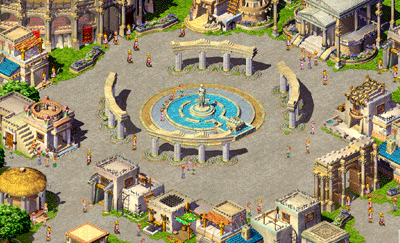
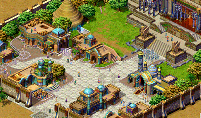

4.0资料片-冒险新区再开
| 最新资料片[王者的荣耀]，当然不可缺少强权的国家，具有强大军事力量的波斯王朝与象征至上荣耀的罗马竞技场，就成为这次资料片主要的场景了，交错在不同时间背景的波斯王朝与罗马帝国，究竟这两大帝国有什么先天优势与过人之处，能来独霸强权，征服许多国家、民族，一切的疑问，将在这次资料片中陆续的揭晓。 另外，纯朴的康沃尔小镇，也将在这次资料片中以乡村风格登场了，由阿瑟王所统领的康沃尔小镇，还有多少惊喜等待玩家发掘，就敬请玩家们拭目以待了。 |
| 罗马帝国： 在希腊文化开始衰落前，另一个受希腊文化熏陶的罗马城开始崛起。不同于希腊人向往理想主义的精神生活，罗马人较崇拜权威与道德的结合，追求实用主义的现实生活。罗马著名的成就在于工程建设方面，如剧场、神庙、竞技场等，都是强调纪念性、权力与雄伟象征的建筑，至今仍在欧洲各地可见。除此之外，罗马所孕育出的拉丁文，也成为中世纪欧洲通用的国际语言。 罗马在西泽大帝及第一位皇帝屋大维的带领下，将版图扩展到整个欧洲，奠定了罗马帝国强盛的基础。罗马人非常笃信宗教，当时罗马人受到希腊人的影响，信仰的神灵多不可数，罗马将领在每次军事行动前，都会事先占卜了了解神的旨意。受到宗教信仰的关系，在罗马各处都可见大大小小的神庙建筑，据说这些神庙都是人界与神界连接的桥界，作恶多端的人若来到神庙，将会被宙斯的雷霆之锤无情的打下而粉身碎骨….。 |
|
 |
| 波斯王朝： 波斯王朝领土十分辽阔，至公元记事前，波斯帝国已延续好几世纪了。其间亚历山大帝曾征服统治过一段时期，当亚历山大帝政权瓦解后，波斯王以相当严密的中央集权的政治机构和强大的军事力量，重新组织波斯帝国，维持帝国的统一。 波斯的建筑融合了埃及、巴比伦、希腊等各民族的艺术成就，构成独特的雄伟华丽的风格，在经济发展方面，波斯王朝积极开拓海上通常航路，陆上方面有中国丝路通行，再配合波斯王实行税制改革及统一度量币制，因而促进了帝国经济发展，成为日后远征最主要的后盾。 波斯王的宫殿建筑在巨石所堆栈而成的高台上，且有十分豪华的殿堂，殿堂以圣牛、角狮和人面形为柱头，侧面壁上的浮雕刻上万人不死军，庄严且气势磅�R，让人会有种奇特的错觉，因此波斯王与冥界勾结的传闻不断产生… |
|
 |